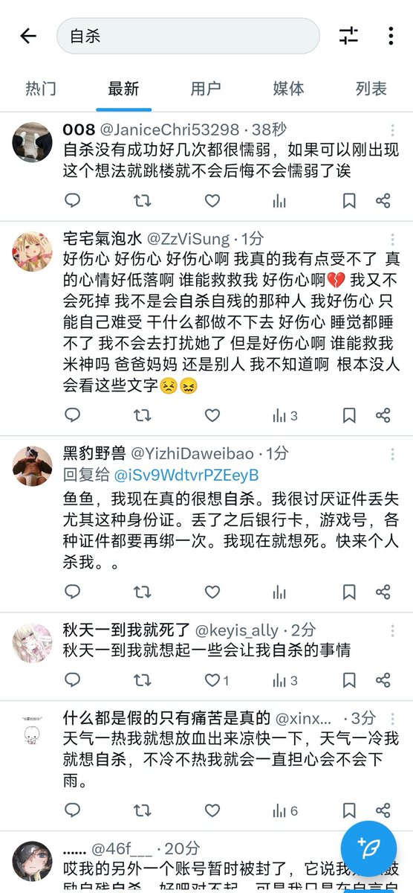

果酱离歌🏳️⚧️
@JamFarewellSong
RT @realnmudml: 总是 很难过
也很累 的时候
会搜一下 “自杀” 的词条
不为什么
只是看看 有多少人
此时 和我一样 痛苦的
这样 能找到 一丝共鸣…
就觉得 会好一点
因为 什么都 改变不了
于是呢 就想着 死亡逃避
就想着 一觉睡到
永远也 醒不过来…

柠檬味的猫粮🍥
@realnmudml
总是 很难过
也很累 的时候
会搜一下 “自杀” 的词条
不为什么
只是看看 有多少人
此时 和我一样 痛苦的
这样 能找到 一丝共鸣…
就觉得 会好一点
因为 什么都 改变不了
于是呢 就想着 死亡逃避
就想着 一觉睡到
永远也 醒不过来
然后 解脱吧
本质 我只是想
暂时地 躲进黑暗里
让自己 不再被光刺痛 https://t.co/VncUFEpW9w